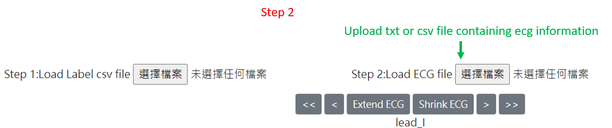
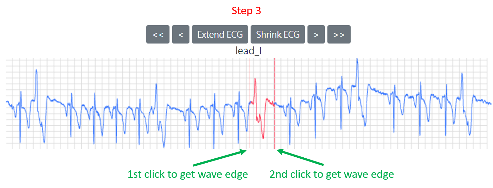
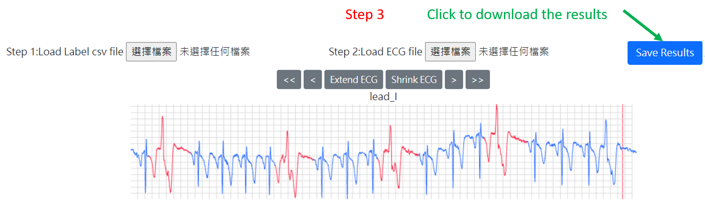

Step 1:Upload the labeling data from local computer. File format should be .csv with first column with id and second column with diagnosis.
This step can be skipped.
Step 2:Upload the raw data. The format of file is as follow:
Step 3:Move the mouse over the ecg. Click to select the edge of the targeted segment.
Step 4:After selecting all the desired segment, click save button to download the result in csv format.
